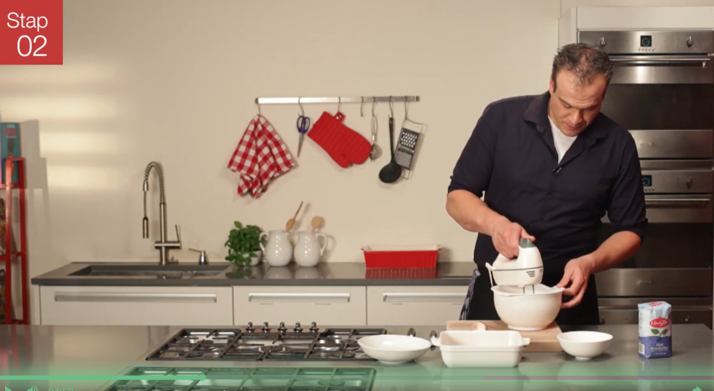
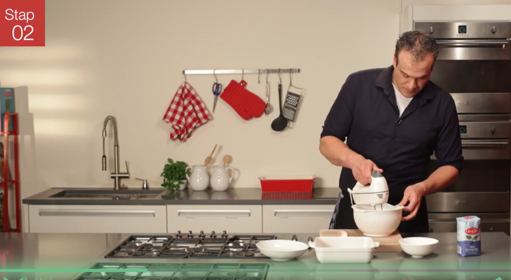

TIRAMISU
bereiding
Doe 75 gram suiker bij de 3 delen eiwit in een grote kom en klop deze net zo lang tot er mooie stijve pieken ontstaan. Zodra je de kom met eiwit omgekeerd boven je hoofd kunt houden is deze stijf genoeg. Doe de andere 75 gram suiker bij het eigeel en klop dit luchtig met een garde. Klop of roer de mascarpone ook los met de hand in een grote schaal.
2Voeg het mengsel van eigeel en suiker bij de mascarpone. Roer de inhoud van de schaal goed door zodat de mascarpone en het mengel van eigeel en suiker mooi gelijkmatig zijn verdeeld. Vervolgens doe je met een spatel heel voorzichtig het eiwit in de schaal bij met mascarpone mengsel. Spatel het eiwit rustig door de mascarpone. Doe je dit te enthousiast dan loop je het risico dat je het 'kapot' maakt, waardoor dit niet langer stijf is. Het lukt dan niet om de Tiramisu voldoende op te laten stijven.
3Het is nu tijd om de lange vingers kort in de 'cocktail' van likeur en koffie te doen. Leg de lange vingers kort in de cocktail en leg deze vervolgens in een grote Tiramisu schaal. Leg net zo veel lange vingers in de schaal tot de bodem volledig is bedekt. Zodra dit het geval is, breng je de eerste laag aan van de Tiramisu door het mengsel van mascarpone hierop te smeren. Herhaal dit proces vervolgens nogmaals. Dus nog een laag lange vingers en bedek deze met de 2e laag mascarpone. De Tiramisu is nu klaar om op te stijven. Zet de Tiramisu in de koelkast voor de duur van een paar uur, minimaal 2 tot 3.
4Controleer als je de Tiramisu wilt eten, of de Tiramisu voldoende is opgestijfd. Als dit het geval is, snij je er een stukje van af, serveer je deze op een schaaltje en zeef je er wat cacaopoeder overheen. De Tiramisu is nu helemaal klaar. Geniet van dit lekkere recept voor Tiramisu, buon appetito!
 
